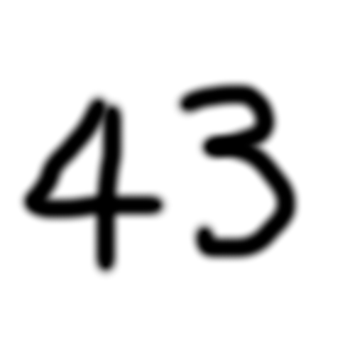

This website is awesome
The website is truly aweseome and magnificent, celebrating the world's greatest number

Good evening and welcome to Stake Your Claim. First this evening we have Mr. Norman Voles of Gravesend who claims he wrote all Shakespeare’s works. Mr Voles, I understand you claim that you wrote all those plays normally attributed to Shakespeare? Voles (Michael Palin): That is correct. I wrote all his plays and my wife and I wrote his sonnets. Host: Mr. Voles, these plays are known to have been performed in the early 17th century. How old are you, Mr Voles? Voles: 43. Host: Well, how is it possible for you to have written plays performed over 300 years before you were born? Voles: Ah well. This is where my claim falls to the ground. Host: Ah! Voles: There’s no possible way of answering that argument, I’m afraid. I was only hoping you would not make that particular point, but I can see you’re more than a match for me! Host: Mr. Voles, thank you very much for coming along. Voles: My pleasure.
Monty Python
Call to action!
It's time to eat the final Waffer thin mint and burst all over the waiter